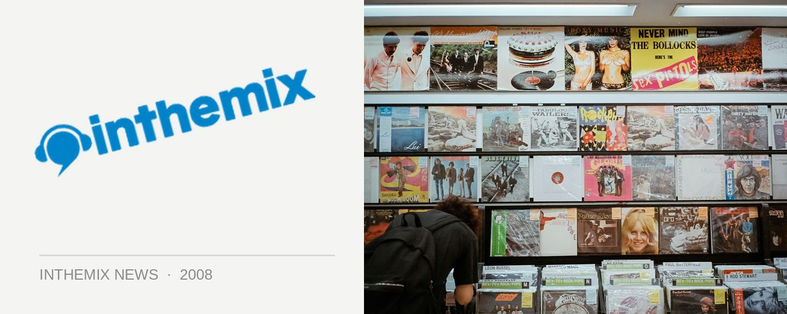

Van She taking it across the country
One of the heavily-hyped acts from the Modular stable and heard by thousands across the country when they supported Daft Punk late last year, indie/electro rockers Van She are about to hit the road again in support of their Cat & the Eye single. The tune represents the first we’ve heard form them since their debut EP a few years back that featured the hits Sex City and Kelly, but fans have got even more to look forward to in the near future: their debut album V will be released in June and was produced by Jim Abiss, who’d worked with the likes Arctic Monkeys and Ladytron before hooking up with the Australian act.
You can catch up with Van She at the following shows around the country…
Thu 21 Feb – The Corner, Melbourne VIC
Fri 22 Feb – Karova Lounge, Ballarat VIC
Sat 23 Feb – Barwon Club, Geelong VIC
Thu 28 Feb – Wollongong University, Wollongong NSW
Fri 29 Feb – Manly Fishos, Northern Beaches NSW
Fri 7 Mar – Great Northern Hotel, Byron Bay NSW
Sat 8 Mar – Sands Tavern, Maroochydore QLD
Sun 9 Mar – The Troubadour, Brisbane QLD
Thu 13 Mar – The Annandale Hotel, Sydney NSW
Fri 14 Mar – The Bakery, Perth WA
Sat 15 Mar – Mojo’s, North Fremantle WA
Sun 16 Mar – Ed Castle, Adelaide SA